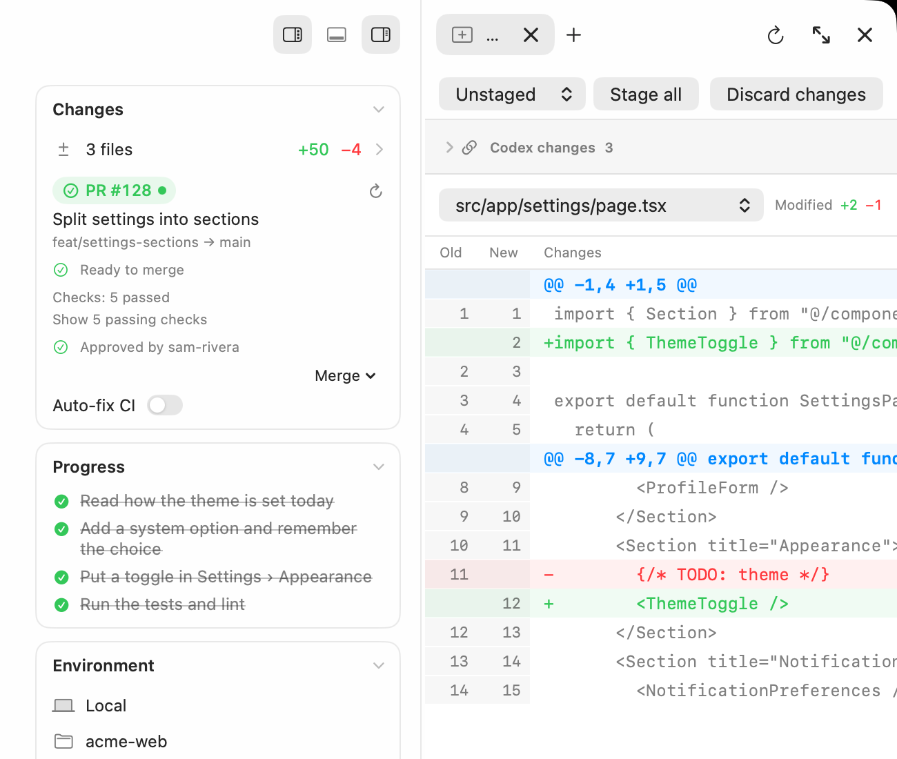
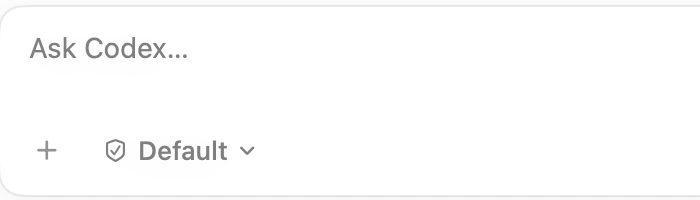
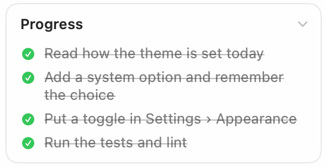
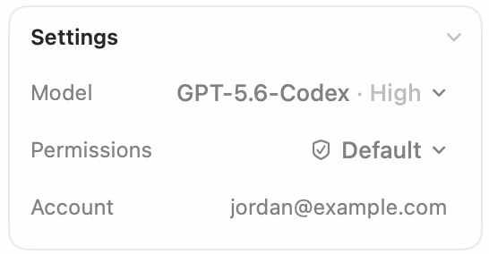
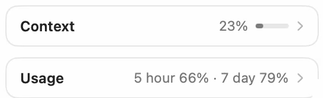
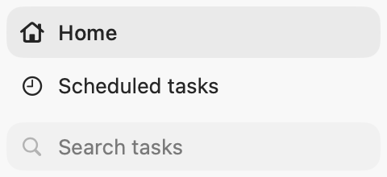
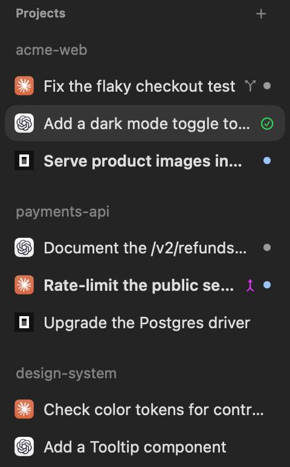

Every account, with its limits in view.
Register more than one account per provider, see each account's session and weekly limits, and start a task on the one with quota left. A saved task keeps the account it started on.

Scroll to move through three scenes: a task from request to answer, two agents side by side, and reviewing the result. They are a recording and screenshots of Yardlet itself.
Codex, Claude Code and the other agent CLIs you already use, side by side. Each one runs as itself, with its own sign-in and session history.

Codex adds a dark mode toggle while Claude Code tracks down a flaky test, each on its own account.

The diff, the checks and the pull request sit next to the conversation that made them.

Accounts, review, connectors and sessions, in the same window where the agents work.
Register more than one account per provider, see each account's session and weekly limits, and start a task on the one with quota left. A saved task keeps the account it started on.
Diffs of the last turn, file restore and fork, a terminal and a files pane sit next to the conversation.
The pull request card follows checks and reviews through your own gh and merges when it is
ready. When checks fail, it shows the log and offers Fix CI.

Gmail, Google Calendar and Google Drive run through Yardlet's built‑in MCP server on your Mac. GitHub, Slack and dozens of remote MCP services connect with one sign-in. Every agent you run can use them, and any of them can be turned off per task.

Yardlet starts the official CLI with its own sign-in and session store. Codex runs against your normal
CODEX_HOME and Claude Code against its own, so a session started here resumes in the
original app or CLI, and the other way round.
~/.yardlet
One window for every task. It keeps only its own index, drafts and reading state.
codex · claude · …
Each one starts with its own sign-in, as it would in Terminal.
~/.codex · ~/.claude
Where the original app and CLI read them, so nothing is copied or moved.
Whichever agent you pick, the task gets the same tools around it, so you learn Yardlet once and keep using it as you switch agents.

Type the task, attach files and choose the permission mode in the same place, whichever agent runs it. Each agent still asks before it acts, as it would on its own.

When an agent makes a plan, its steps sit beside the conversation and tick off as the work moves.

Choose the model, reasoning effort and account each task runs with, from the choices that agent offers.

See how much of its context a task has used, and how much of each account's session and weekly limits is left.

Start tasks on a schedule while Yardlet is open; a missed run goes once when it opens again. Tasks can also read, message or start one another.
A Chromium panel beside the conversation that agents drive through browser tools while you watch.
Drawing of the panel, not a screenshot.
Yardlet starts each agent's official CLI with the sign-in it already has, so your subscriptions and accounts keep working as they are. It never imports credentials from other apps.
Product names belong to their owners. Yardlet is not affiliated with or endorsed by them.

Yardlet is a window onto tools you already trust. Your work stays between your Mac, your agents and the services you connect.
Yardlet has no analytics and sends nothing to its developer. Its task list and drafts stay in
~/.yardlet, and the phone remote's relay passes only messages it cannot read.
Connector sign-ins are kept in the macOS Keychain, and connector calls go straight from your Mac to the service.
What an agent reads, including through a connector, goes to that agent's AI provider under your account. Training follows that account's settings.
Connecting a Google account is optional, and you choose which of Gmail, Google Calendar and Google Drive to turn on. Yardlet then lets the agents you run search, read, draft, send and label your email, read and change your calendar events and check free times, and read your Drive files and create files of their own.
Yardlet calls Google's APIs directly from your Mac, only when an agent uses one of these tools for a task you gave it. It does not sell Google data, use it for advertising, or use it to train AI models. The privacy policy lists each permission Yardlet asks for and where the data goes.
No. Yardlet starts the official command-line tools, such as codex and claude,
and gives them one window. Sessions stay in each tool's own store, so a session started in Yardlet resumes
in the original app or CLI, and the other way round.
Yes. Each agent runs with the sign-in its CLI already has. You can register more than one account per provider and choose one per task. Yardlet never imports credentials from other apps.
Codex, Claude Code, OpenCode, Cursor Agent, Antigravity CLI, Kimi Code, Grok Build, Hermes Agent, Muse Code and Pi. Install and sign in to at least one of them before you start.
Yardlet keeps its task list and drafts on your Mac and sends nothing to its developer. What an agent reads goes to that agent's AI provider under your account. Connector calls go straight from your Mac to each service. If you pair a phone, its messages pass through Yardlet's relay end-to-end encrypted, so the relay cannot read them. The privacy policy has the details.
Google reviews apps that ask for access to Gmail and Drive, and Yardlet's review is not finished yet. Until it is, Google's sign-in screen shows a warning and limits how many people can connect. Connecting Google is optional. You can also choose "Use a Google OAuth app of your own…" on Yardlet's Google setup page and sign in through an app you made.
Yardlet updates itself with Sparkle. Once a day it reads https://yardlet.app/appcast.xml; a
newer version downloads from GitHub Releases and installs when Yardlet quits. It installs only updates
signed with Yardlet's release key. You can turn the daily check off in Settings › General.
Yes. Yardlet is open source under the MIT License, with no Yardlet account or subscription. You pay only for the agents' own plans, as you do today.
Yardlet needs macOS 15 or later on a Mac with Apple silicon. It is a native Mac app written in Swift, and there is no Windows or Linux version.